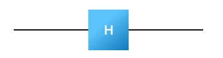
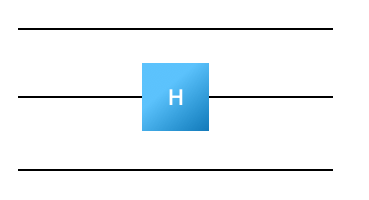
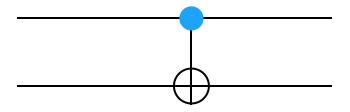
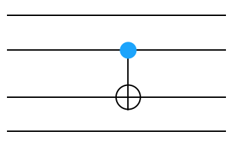
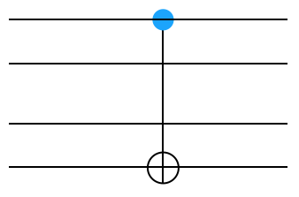
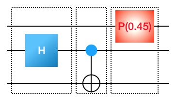
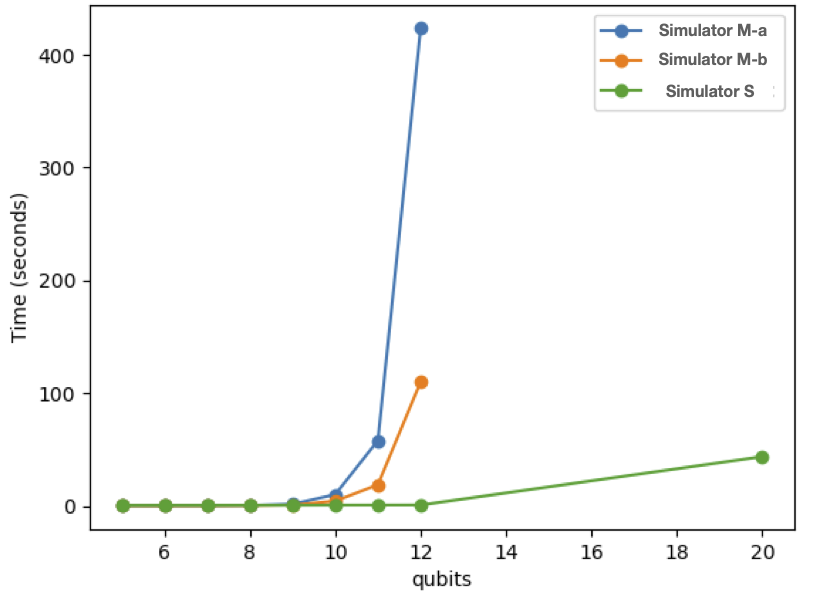
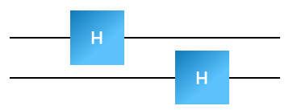

QC Simulator I(abcd)
Contents
QC Simulator I(abcd)#
In this section, we are going to write some additional quantum computing simulators. These are conceptually useful but aren’t as quick. Instead of approaching quatnum computing as a map between binary numbers they instead think of everything in terms of matrices.
Constructing the unitary matrix for the quantum circuit.#
A general circuit can be represented by a unitary matrix \(U_\textrm{circuit}.\) From a description of the circuit, build this matrix. Then:
Generate the vector for the input \(|\Psi_\textrm{in}\rangle = |00..0\rangle\) (n zeros). This is a quantum state and quantum states are represented in your program by a \(2^n\) size vector where \(n\) is the number of wires.
Multiply the vector \(|\Psi_\textrm{in}\rangle\) by \(U_\textrm{circuit}\). This gives you the output quantum state \(|\Psi_\textrm{out}\rangle\)
Measure the final quantum state \(|\Psi_\textrm{out}\rangle.\) This is done by returning the binary number \(\langle ij..k |\) with probability \(|\langle ij..k |\Psi_\textrm{out}\rangle|^2\). (Figure out what this means in terms of your vector)
To make matrix representations of \(n\)-wire circuits, you first need to understand how to make matrix representations of the circuit components which act on 1 or 2 wires.
Let’s start by thinking about the Hadamard gate. I want to accomplish this:
![What is the output of a Hadamard gate when fed the state on the left?] 
The input state is \(\sqrt{0.3}|0\rangle + \sqrt{0.7}|1\rangle\). First, figure out how to represent this state as a vector. Then figure out what the output vector should be after its application.
As a next step, figure out how to build the unitary matrix for this quantum circuit:

Notice that this is the same input state (do you understand why?), though now it is represented by a \(2^3\) size vector. (What is the \(2^3\) size vector for this state?). The unitary matrix representing this quantum circuit is \(2^3 \times 2^3\) even though the Hadamard gate applies only to the first wire. A trick for constructing the larger representation is to build the matrix \(I \otimes H \otimes I\), where \(H\) is the matrix for the Hadamard gate, \(I\) is an identity matrix, and \(\otimes\) denotes a tensor product. Write code that constructs the matrix representing a Hadamard applied to wire \(i\) in a \(k\)-wire circuit (in this case \(k=3\)). Working in python, you might define a function that looks something like this
def HadamardArray(i, k):
# this should apply Hadamard to wire i out of k wires
size=...
myMatrix=numpy.zeros((size,size))
#do stuff
return myMatrix
Python hint: a @ b multiplies two matrices (or numpy arrays)
Repeat this exercise for the phase gate (note, to construct the array your function will need the phase angle as an argument). Begin by figuring out the correct matrix for the phase gate on one wire.
I found it useful to build a function tensorMe(listOfMatrices) which takes a list of matrices and generates their tensor product.
The CNOT gate: The next step in building our simulator is to construct matrix representations for gates that act on multiple wires. The controlled-not gate, CNOT, is non-trivial because it is applied to two wires at once.

We have told you what the right matrix to use for a right-side up CNOT. Figure out the right matrix to multiply your state for an upside-down CNOT on the left of the gate \(|\Psi_\textrm{left}\rangle\) by to get the state on the right of the gate \(|\Psi_\textrm{right}\rangle\).
Now, let’s figure out how to do it when the CNOT gate is in the middle of four wires, like below.

Remember, you are going to use identities to tensor against this. You will want to write a function like
def CNOTArray(controlWire,otherWire,totalWires):
myMatrix=numpy.zeros((size,size))
#do stuff
return myMatrix
Test your function after you’ve written it. You can make some input state and verify that it produces the correct output state, like below.
myInputState = ... #some state of 4 wires
myOutputState = CNOTArray(3,2,4)* myInputState
Make sure to check your results by hand.
A challenge: We’ve figured out how to construct CNOT gates that apply to neighboring wires. But what happens if the controlled bit is further away from the controlling bit (say between wires 1 and 3), like such:

Can you figure out how to write the matrix for this gate? This is much harder then the other things you’ve done. If you can get it to work, that’s great. If not, don’t worry about it. We’ll see in a couple minutes how to do it.
Putting the gates together: You’ve figured out how to make matrix representations for various gates. Now suppose we want to compose multiple gates into a more complete circuit. For example, suppose you have the following input
3
H 1
CNOT 1 2
P 0 0.45
It consists of three gates applied sequentially. You know how to build the matrix for each of these individual gates (in the dotted boxes). 
Let’s now proceed with building the unitary matrix which represents this circuit. Be careful about the order in which you apply your matrices; remember that the input travels from left to right.
At this point, you (personally) should be able to take a circuit description and produce the unitary circuit which represents it. Go ahead and run this simulator on the same tests as Simulator II
Computational Complexity#
One of the reoccuring themes in this course will be using efficient algorithms. Let’s think about the efficiency of our simulation. There are two things we might consider: the time complexity and the space complexity. Let \(g\) be the number of gates and \(2^w=N\) be the size of the Hilbert space. You needed to make \(g\) matrices with \(N^2\) numbers in them. Therefore, the amount of space that you took up was something like \(gN^2\) (depending on how you implemented things it might even be just \(O(N^2)\) RAM). In terms of your complexity, you needed to multiply a bunch of \(N \times N \) matrices. Each such multiplication takes \(O(N^3)\) work. So you needed to do something like \(gN^3\) work.
Simulator Ib#
Note: You are going to improve your algorithm here. Don’t erase your old version because although it is slower it gives you more information that you will sometimes find useful.
Let’s go ahead and make some minor changes that will improve the efficiency of the algorithm.
We can significantly decrease the amount of work if we build the matrix for the first circuit element and then multiply by the current state to produce the output state. Then you can build the matrix for the next gate and multiply it against the current state. Go ahead and do this. Now, applying each gate involves a matrix-vector multiplication. That takes \(O(N^2)\) time each for a total time of \(O(gN^2)\). You stil need \(O(N^2)\) RAM.
Grading
Do the same tests as above on your faster simulator and paste them into your document.
Simulator Ic#
Once you have this implemented, let’s make another improvement. Currently, you are building big matrices for each gate. Q: How many non-zero elements does your matrix actually have? What you will find is that it should only have \(O(N)\) non-zeros. This suggests that we should store the matrices in a sparse way. Build up your matrix, then using sparse matrices. You might want to use scipy.sparse.kron for doing this. Allow the vector to be dense but do the matrix-vector product using sparse matrices. The total RAM you are using is now \(O(N)\). Also, each matrix-vector multiplication, only involves \(O(N)\) work. This is much better.
You want to make everything sparse and keep it sparse. The trick is to use scipy.sparse to keep everything in csr format.
I used commands like (not in this order)
scipy.sparse.csr_matrix(scipy.sparse.identity(1,dtype='complex'))
myState.tocsr()
scipy.sparse.kron(myMatrix,matrix,format='csr')
scipy.sparse.csr_matrix([[1,0],[0,numpy.exp(1.j*theta)]])
Using a @ b keeps everything sparse in python.
Grading
Do the same tests as above to verify your simulator works.
You should measure the time that both simulators takes as a function of number of qubits. Generate random circuits of a fixed length with more and more qubits and see how long things take by running time python mySimulator.py myInput.
Make a plot of the result like below and add it to your document. Do the same thing with the RAM (use top or activity monitor to view the ram usage. You just need to get an approximation). Here we show the results for simulators I(abc)

Simulator Id#
Extra Credit (5 points)
Simulator 1d is extra credit. This is actually the simulator you would probably write to be most efficient in C++. In python, it seems to generally be slower (everything here is mainly about constants and not about actual computational complexity). There is better extra credit to do so I wouldn’t do this part unless this especially interests you.
In this simulator, we want to simply write functions that apply the Hadamard gate taking as input a vector and giving output another vector. At no point do we want to build the whole matrix for the Hadamard gate though (sparse or otherwise). This is very similar to Simulator II but instead of going from state -> state we go from vector -> vector. In a normal language (i.e. C++) this would be faster then the other simulators but I find in python it’s generically slower.
Write
def HadamardArray(inWire,numWires,inputState):
#do some stuff
return outputState
where inputState and outputState are big vector, but never build a big matrix.
Consider the following quantum circuit.

We’d like to figure out what the state is at the first dotted line without building a large (even sparse) unitary matrix. To accomplish this we are going to use the fact that quantum mechanics is linear. What this means is that if I want to apply a gate to a quantum state, I can just go ahead and apply the gate to every basis element of the quantum state. This is similar to simulator II but now we are going to have a starting and ending state to be a vector.
Therefore, if I have a quantum state that’s represented as \(\sum_i \alpha_i |i\rangle\) then my new state is going to be \(\sum_i \alpha_i U|i\rangle\). We know that \(H|0\rangle \rightarrow \frac{1}{\sqrt{2}}(|0\rangle + |1\rangle)\) and \(H|1\rangle \rightarrow \frac{1}{\sqrt{2}}(|0\rangle - |1\rangle)\). So we should think about what the Hadamard gate on wire 2 does to every binary number. We see that
\(H_2|000\rangle \rightarrow |0\rangle \otimes (H|0\rangle) \otimes |0\rangle\)
which goes to
\(|0\rangle \otimes \frac{1}{\sqrt{2}}(|0\rangle + |1\rangle) \otimes |0\rangle \rightarrow \frac{1}{\sqrt{2}} (|000\rangle + |010\rangle)\).
Now remember that you were applying \(H_2\) to \(\alpha|000\rangle\) so really you should be getting \(\alpha \frac{1}{\sqrt{2}} (|000\rangle + |010\rangle)\). So in the output state you need to add in \(\alpha/\sqrt{2}\) to spot 0 (i.e. binary number 000) and \(\alpha/\sqrt{2}\) to spot 3 (i.e. binary number 010). You need to figure out the correct application of \(H_2\) to every binary number. Once you understand how to do this, then
loop over all the basis elements of the input state
for each basis element, figure out what happens when you apply the Hadamard to the appropriate wire and put the amplitudes in the correct place in the output states
Once you’ve figured out how to do this for the Hadamard gate (and written the function), make sure you test. You can do that by comparing against your previous code or using the tests you’ve made there, etc.
Now you have to figure out how to go about this for all three gates. In practice the Hadamard is the hardest. The phase gate and the CNOT gate have the property that they take one basis element to another basis element (i.e. \(|b_i\rangle \times |b_j \rangle\)).
Notice that, for the CNOT gate, it is now trivial to apply the gate to wires that aren’t nearest neighbors.
Once you’ve figured out how to do this, then you can put everything together. Now instead of building up a big matrix, you can simply take the input state, and apply the gates in sequence.
Question: Given the simulator you’ve just built, how would you (slowly) generate the big unitary matrix? Can you use this to verify your result?
Question: How many qubits are you going to be able to simulate in your new simulator?
Once again, go ahead and test your quantum simulator in various ways. You should verify that it works.
Grading
Show that the new simulator works using the same suite of test. It should use the least RAM of all your methods.
Go ahead and add this data to your graphs above.